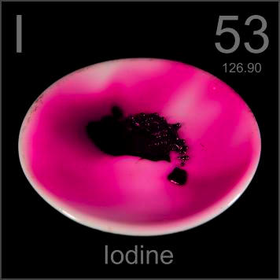

What are "halogens"?
Halogens are non-metallic elements which are found in group 17 on the periodic table. They were known as group VIIA.Halogen actually means "salt former." Because the outer electron structure in all of these elements is similar, they all have similar chemical and physical properties.
Characters of halogens
- Each halogen has 7 electrons in the outer shell.
- At room temperature halogens can be found in solid, liquid and gas.
- Diatomic molecules.
- Highly reactive non-metals.
- Toxic.
- High ionization energy.
- React easily with alkali metals.
- Second smallest atomic radius in their periods.
- Low densities(except iodine and astatine).
- High electronegativity.
- React with hydrogen to form hydrogen halides,a kind of strong acid(except HF).
Trends among halogens
- Atomic numbers become larger and larger as the column goes down.
- The amounts of electron shells become more and more as the column goes down.
- Atomic radiues become larger and larger as the column goes down.
- Melting points and boiling points become higher and higher as the column goes down.
- Densities become larger and larger as the column goes down.
- Electronegativity becomes higher and higher as the column goes down.
- More and more unreactive as the column goes down.
- Harder and harder to react as the column goes down.
- States change from gas to soid as the column goes down.
- Colours become darker and darker as the column goes down.
- The acidities of hydrogen halides become stronger and stronger as the column goes down.
Members of halogens
F(Fluorine)
Cl(Chlorine)
Br(Bromine)
I(Iodine)

At(Astatine)